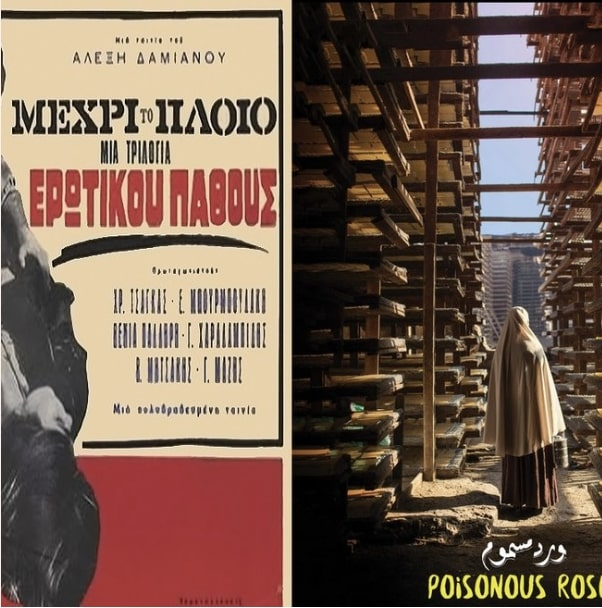
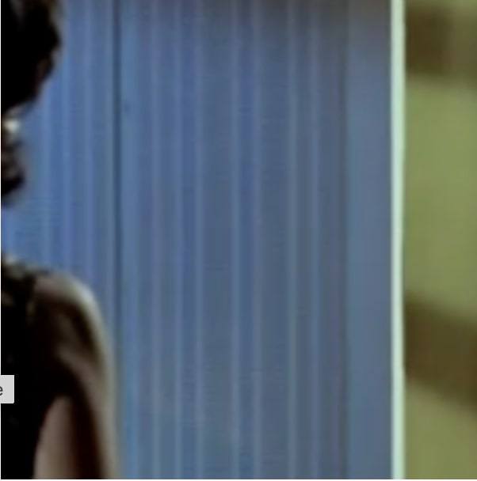
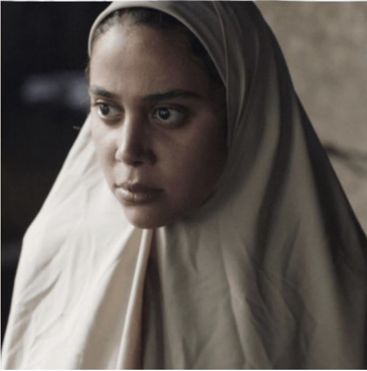
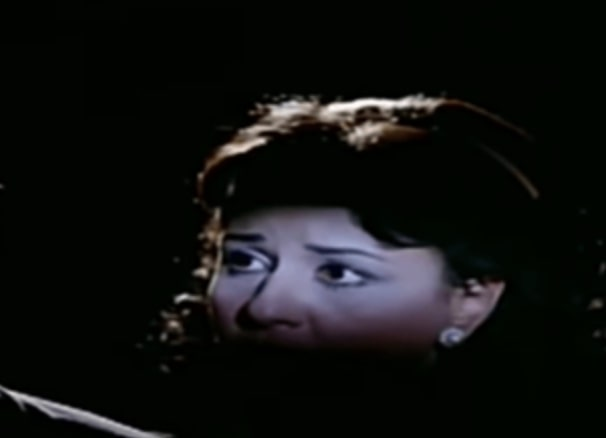
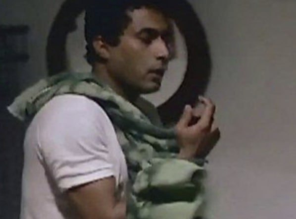
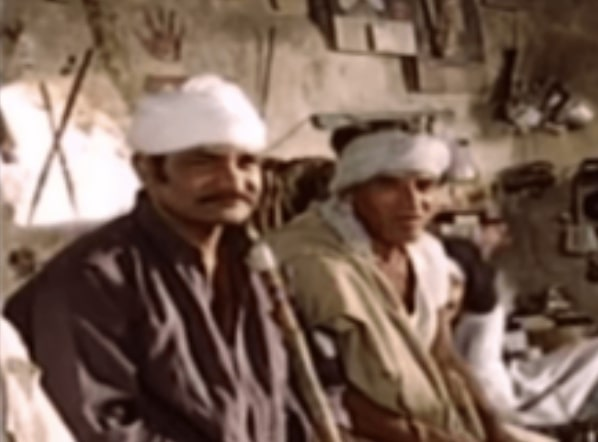
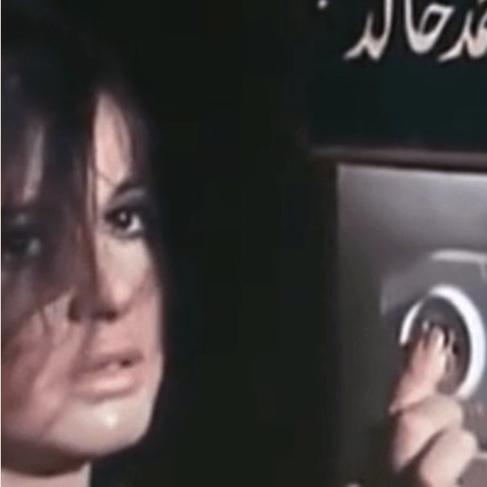

Anywhere but here, Correspondences #4
Part of Unfortunately it was paradise, a collaboration between AIN and locus Athens looking at films by Greek filmmaker Alexis Damianos and Egyptian filmmaker Ahmed Fawzy Saleh
Read FurtherReviews and essays on cinema

Part of Unfortunately it was paradise, a collaboration between AIN and locus Athens looking at films by Greek filmmaker Alexis Damianos and Egyptian filmmaker Ahmed Fawzy Saleh
Read Further
Essay reflecting on Henry Barakat's The Thin Thread (1971), based on a novella by Ihsan Abdel Quddous, by the same name.
Read Further
Review of Ahmed Fawzi Saleh's Poisonous Roses (2018)
Read FurtherReview of Henry Barakat's The Open Door (1963) based on Latifa al-Zayat's novel with the same name, published in 1960
Read Further
Review of Raafat al-Mihi's Love's Last Story (1986)
Read FurtherEssay reflecting on three films in post-independence period, Hassan al-Imam's Midaq Alley (1963), Hussam al-Din Mostafa's film Al-Nathara al-Sawdaa (Black Shades, 1963) and Henry Barakat's Al-Haram (The Sin, 1965)
Read Further
Review of the film, Love Over the Pyramid Plateau (1986), directed by Atef El Tayeb. Based on Naguib Mahfouz's short story (1979) by the same name.
Read FurtherReview of the film, I Want A Solution (1975), directed by Said Marzouk
Read Further
Review of the film, The Piper (1985) by Atef El Tayeb
Read FurtherReview of the film You and Me and the Hours of the Journey (1988) and directed by Mohamed Nabih
Read Further
Review of the film A Bit of Torment (1969) directed by Salah Abou Seif
Read Further